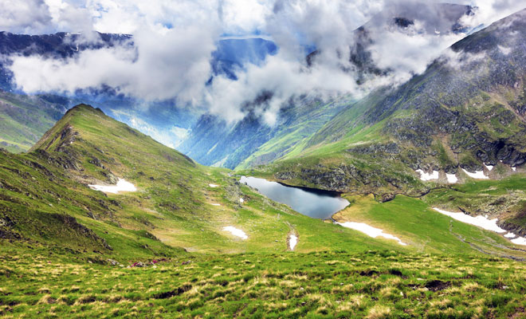

Lacul Gozna, din judetul Caras-Severin, este un lac de acumulare situat pe cursul superior al Vaii Barzavei, in amonte de localitatea Valiug.
Lacul Galcescu, denumit si Calcescu, este cel mai mare lac glaciar din Muntii Parang.
Lacul Custura Mare sau Taul Custura Mare este situat în caldarea superioara a paraului Custurii, sub varful cu aceeasi denumire (2457 m), din muntii Retezat, la altitudinea de 2 155 m.